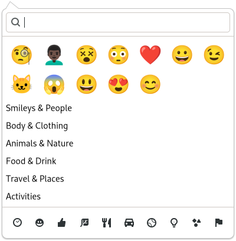

Gtk.EmojiChooser¶
Example¶

- Subclasses:
None
Methods¶
- Inherited:
Gtk.Popover (21), Gtk.Widget (183), GObject.Object (37), Gtk.Accessible (18), Gtk.Buildable (1), Gtk.Native (6)
- Structs:
class |
|
Virtual Methods¶
Properties¶
- Inherited:
Signals¶
- Inherited:
Name |
Short Description |
|---|---|
Emitted when the user selects an Emoji. |
Fields¶
- Inherited:
Class Details¶
- class Gtk.EmojiChooser(**kwargs)¶
- Bases:
- Abstract:
No
- Structure:
Used by text widgets to let users insert Emoji characters.
<picture> <source srcset=”emojichooser-dark.png” media=”(prefers-color-scheme: dark)”> <img alt=”An example
Gtk.EmojiChooser" src=”emojichooser.png”> </picture>GtkEmojiChooseremits the [signal`Gtk`.EmojiChooser::emoji-picked] signal when an Emoji is selected.- Shortcuts and Gestures
GtkEmojiChoosersupports the following keyboard shortcuts:<kbd>Ctrl</kbd>+<kbd>N</kbd> scrolls th the next section.
<kbd>Ctrl</kbd>+<kbd>P</kbd> scrolls th the previous section.
- Actions
GtkEmojiChooserdefines a set of built-in actions:scroll.sectionscrolls to the next or previous section.
- CSS nodes
`` popover ├── box.emoji-searchbar │ ╰── entry.search ╰── box.emoji-toolbar
├── button.image-button.emoji-section ├── … ╰── button.image-button.emoji-section
Every
GtkEmojiChooserconsists of a main node called popover. The contents of the popover are largely implementation defined and supposed to inherit general styles. The top searchbar used to search emoji and gets the .emoji-searchbar style class itself. The bottom toolbar used to switch between different emoji categories consists of buttons with the .emoji-section style class and gets the .emoji-toolbar style class itself.
Signal Details¶
- Gtk.EmojiChooser.signals.emoji_picked(emoji_chooser, text)¶
- Signal Name:
emoji-picked- Flags:
- Parameters:
emoji_chooser (
Gtk.EmojiChooser) – The object which received the signaltext (
str) – the Unicode sequence for the picked Emoji, in UTF-8
Emitted when the user selects an Emoji.